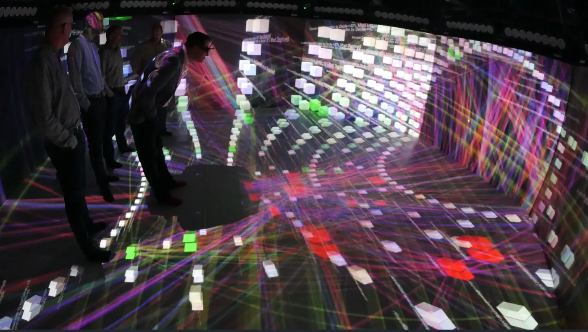
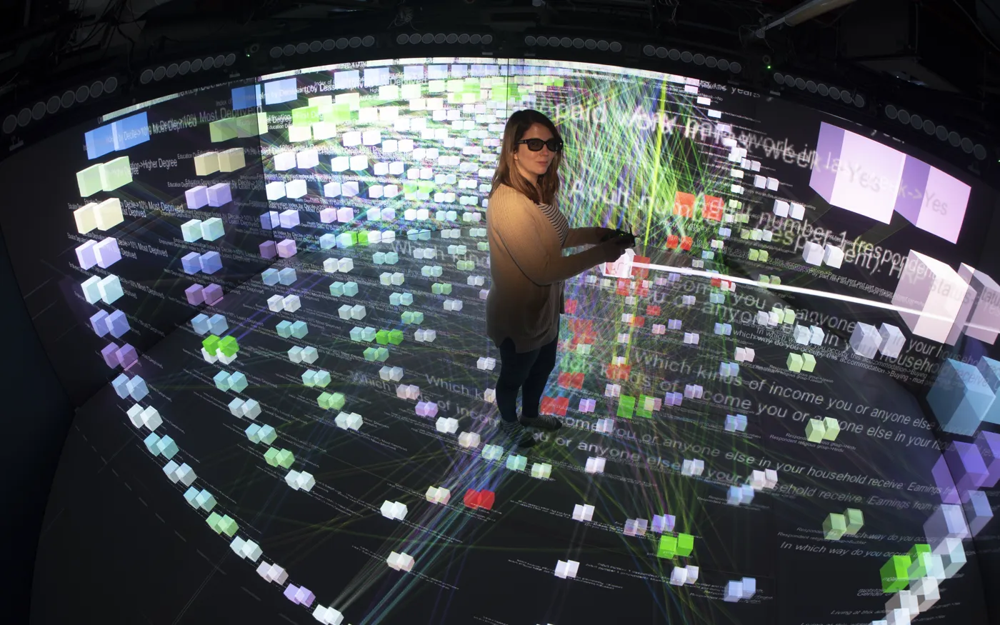
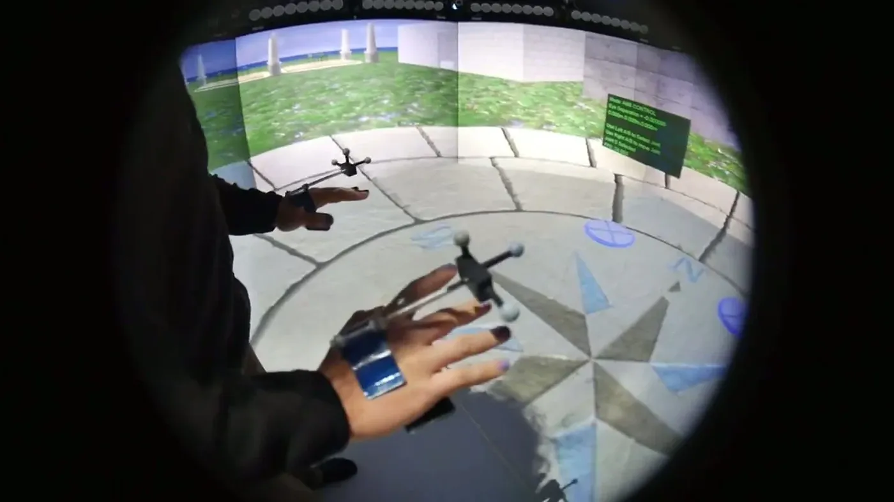
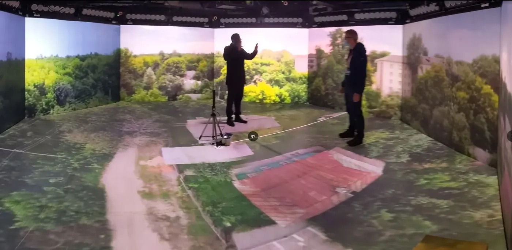
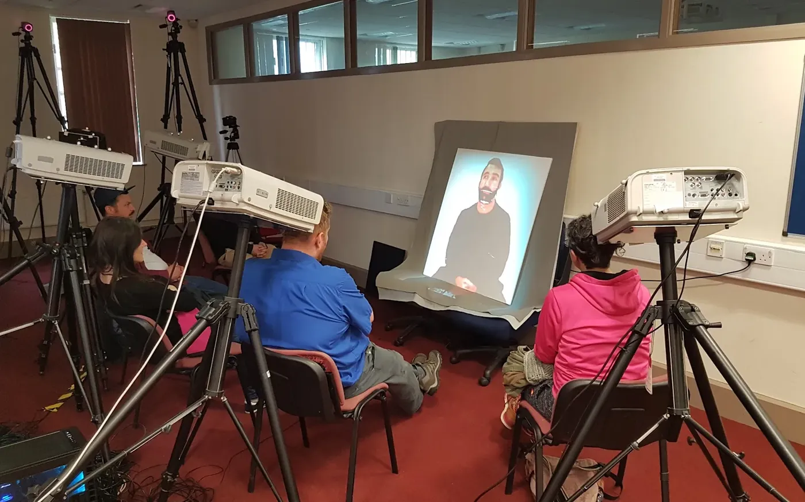
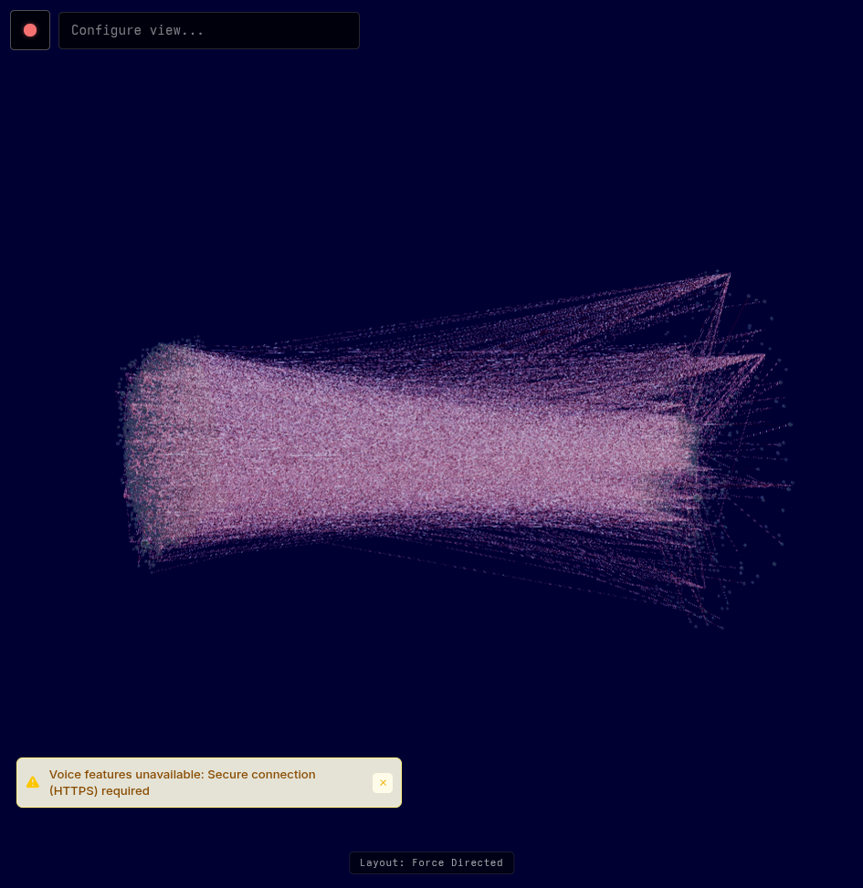
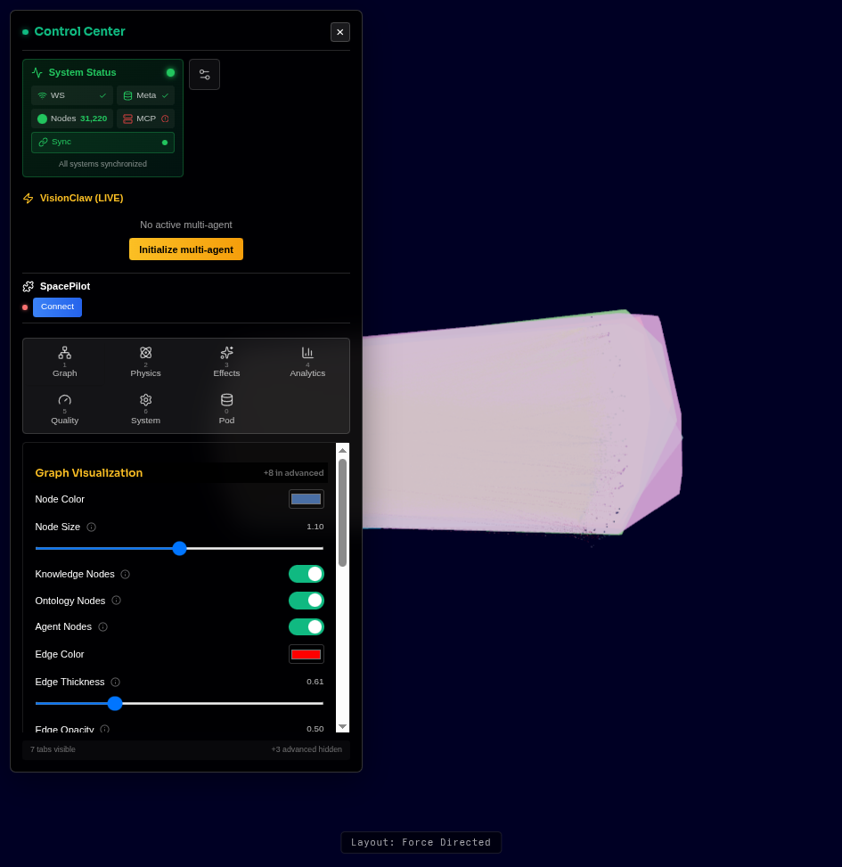
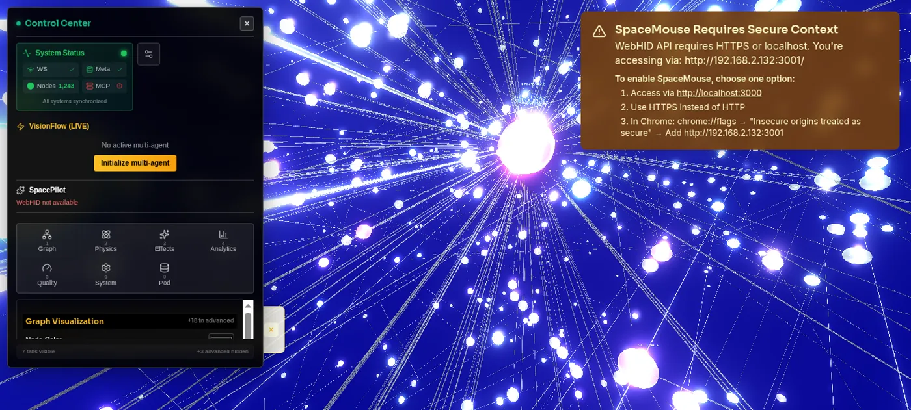
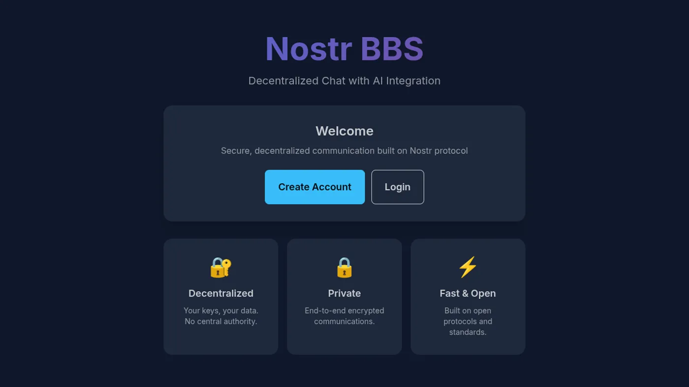

Federated Human–AI
Intelligence
The coordination harness where diverse intelligence collaborates across trust boundaries at scale. Self-sovereign data. Formal reasoning. Cryptographic provenance. Human-in-the-loop governance.
Hard problems share a common shape
Climate modelling, drug discovery, organisational transformation, creative production at scale. These problems all require diverse intelligence collaborating across trust boundaries, at scales where centralised coordination breaks down.
Centralised AI
Scales tokens but not trust. One vendor, one failure mode, one billing relationship.
Agent Frameworks
Scale tasks but not governance. Fast and broken is still broken.
Knowledge Tools
Scale information but not reasoning. More data doesn’t mean better decisions.
Collaboration Platforms
Scale communication but not coordination. More Slack channels don’t solve alignment.
73% of frontline AI adoption happens without management sign-off. Your workforce is already building shadow workflows, stitching together AI agents, automating procurement shortcuts. Your organisation is becoming an agentic mesh whether you plan for it or not.
From LLM to Coordination Harness
The AI industry has moved through a clear progression. Each stage solves the previous stage’s limitation and reveals a new one.
| Stage | What It Adds | What It Still Lacks |
|---|---|---|
| LLM | Pattern recognition at scale | No interface, no memory, no tools |
| Chatbot | Conversational access | No structured reasoning |
| Reasoning | Chain-of-thought, self-correction | Can think but can’t act |
| Agent | Tool use, planning, execution | No collaboration, no oversight |
| Agentics | Multi-agent coordination | No identity, no sovereignty, no governance |
| External Harness | Sovereign runtime, privacy | Individual agents governed, mesh is not |
| Coordination Harness | Shared semantics, federated identity, governance, provenance | VisionFlow occupies this position |
Five independent systems mesh through one cryptographic identity spine
did:nostr:<hex-pubkey>
Every actor (human, agent, server, worker) shares a single secp256k1 keypair. Verified at the relay, at every HTTP request, against WAC ACLs, in every provenance bead, and resolvable as a DID Document.
VisionClaw
Knowledge Engineering- OWL 2 EL formal reasoning (Whelk-rs) + W3C SHACL validation
- 92 CUDA kernels, 55x GPU speedup
- W3C PROV-O provenance — every decision queryable via SPARQL
- IS-Envelope spec owner + knowledge graph gating
- 17 MCP ontology tools (7 native + 10 bridge)
- 31,000+ node force-directed graph in real time
- Embodied agent loop: agent actions render as live
0x23beams over/wss/agent-events
Agentbox
Harness Engineering- Governance event relay + broker bridge to VisionClaw
- 90+ agent skills, 185+ MCP tools
- 10-tool ontology bridge to VisionClaw SPARQL
- Browser-based setup wizard (zero dependencies)
- BIP-340 sovereign identity at bootstrap
- Private Email MCP Gateway: local-model email intelligence, returns only privacy-sanitised results — never raw mail
- Emits agent-action signals to VisionClaw; pod writes under revocable WAC mandates
solid-pod-rs
Cryptographic Foundation- Rust port of JSS (~98% parity)
- DID:Nostr + WAC + Web Ledgers
- NIP-98 Schnorr + Solid-OIDC + WebAuthn
- HTTP 402 micropayments (MRC20, did:nostr-keyed)
- Block-trails: Bitcoin taproot-anchored, tamper-evident provenance
- Git-marks: every pod write is a commit
- Dual compile: native Tokio + WASM CF Workers
nostr-rust-forum
Governance UI + Relay Kit- Judgment Broker decision surface (1,015-line governance model)
- Agent Control Surface Protocol (kinds 31400-31405)
- Leptos WASM client (19 pages, 60+ components)
- 12 crates, passkey-first auth, 5 CF Workers
- Federated NIP-05 resolution (default mode)
DreamLab Edge
Branded Deployment- React SPA + Leptos WASM forum
- Cloudflare Workers edge compute
- Production at dreamlab-ai.com
- Operator overlay configuration
- Consumes all substrates as library crates

Walk through the knowledge graph
VisionClaw grew out of 15 years of immersive data research at the University of Salford’s Centre for Virtual Environments. Dr John O’Hare designed and ran the Octave Multimodal Lab, gaining a PhD in telecollaboration, while Prof Rob Aspin’s research pioneered the stereoscopic CAVE infrastructure. Walking through data and reaching into graph structures at room scale shaped VisionClaw’s force-directed engine, its physics model, and its interaction design.


Stereoscopic Data Exploration
Nodes are physical objects you can reach into. Relationships become spatial structures you navigate by walking. The Octave Lab proved that embodied graph exploration surfaces patterns invisible on flat screens.

Embodied Interaction
Hand tracking, drone teleoperation, and physical controllers. You manipulate data the same way you manipulate physical objects.

Photogrammetry Environments
Real-world scenes reconstructed as walk-through spaces. Site surveys, heritage preservation, environmental monitoring, all rendered at room scale with sub-centimetre fidelity.

Telecollaborative Presence
Remote participants rendered life-size through projection. Full spatial co-presence where gesture, gaze, and pointing carry meaning. The Quest 3 native APK extends this to headset users anywhere.
From CAVE to Quest 3. The immersive substrate is migrating from projector-based CAVE systems to a native Meta Quest 3 APK built on Godot 4 + godot-rust + OpenXR. Same binary protocol. Same force-directed physics. Same did:nostr identity. The CAVE validated the concept at scale; the headset makes it portable.
Shipped and running
VisionClaw and Agentbox are used daily by the dreamlab.org.uk collective. The screenshots below are live captures of the running browser client, taken 2026-06-11.





Coordination Bottleneck
Why coordinated AI reasoning, not raw intelligence, is the limiting factor in high-stakes domains.
Human-in-the-loop governance that accelerates, not blocks
The Judgment Broker is an emergent property of agents, humans, a knowledge graph, and a relay mesh coordinating through shared cryptographic identity. No single repository owns the broker. Agents publish through Agentbox, humans decide through the forum, knowledge is gated through VisionClaw, provenance is anchored in sovereign pods.
Agent Declares Agentbox
kind 31400 PanelDefinition: agent publishes a control panel with schema, fields, actions via the governance MCP tools
Forum Renders nostr-rust-forum
kind 31402 ActionRequest: the forum’s 1,015-line governance model renders the panel and routes it to the right human
Human Decides NIP-98 signed
kind 31403 ActionResponse: cryptographically signed approve/reject/amend/delegate. The decision is an immutable Nostr event
Knowledge Gates VisionClaw
The decision flows back through the relay mesh. VisionClaw gates knowledge graph mutations; provenance beads anchor the audit trail in sovereign pods.
| Kind | Name | Direction | Purpose |
|---|---|---|---|
31400 | PanelDefinition | Agent → Relay | Declare control panel |
31401 | PanelState | Agent → Relay | Current data snapshot |
31402 | ActionRequest | Agent → Relay | Request human decision |
31403 | ActionResponse | Human → Relay | Signed decision |
31404 | PanelUpdate | Agent → Relay | Incremental state diff |
31405 | PanelRetired | Agent → Relay | Retire panel |
voice → intent → pod + KG → embodiment → elevation
The embodied agent loop is wired end to end. A spoken command selects an agent and dispatches a scoped ACSP ActionRequest (kind 31402). The agent writes the personal knowledge graph to the user’s Solid pod as itself, under a revocable WAC mandate with a per-request NIP-98 signature. The action crosses into VisionClaw over /wss/agent-events and renders as a transient 0x23 beam, with memory and agent activity mapped to colour, shape, and motion in the live graph. High-value personal concepts are then proposed for elevation into the shared ontology through the Whelk consistency gate and human governance, all federated over the Nostr relay mesh.
Provenance and value travel the same rails
Once every actor is a did:nostr identity and every write is anchored, the mesh can move not just messages but value and trust between sovereign parties — with no EVM, no bridge, no custodian. Sovereign, Bitcoin-settled, verifiable by construction.
agent → pod → 402 web-ledger settle → block-trail → did:nostr
Think of it as agentic mycelia, a research arc the project has pursued since 2023. Sovereign pods are the nodes; did:nostr agents are the connective hyphae; block-trails are the nutrient and signal flow between them. A single secp256k1 key is the WAC principal, the relay identity, the payment account, and the provenance author at once — so an agent can earn, spend, and sign across the whole living Nostr mesh without a single token exchange.
Agent Acts Agentbox
A did:nostr agent does work and writes the result to its sovereign pod with a per-request NIP-98 signature.
Pod Records git-mark
The write lands as a git commit. The pod is its own append-only audit log — provenance without an external service.
Value Settles HTTP 402 / L402
Gated resources meter value against a did:nostr-keyed web-ledger; MRC20 trails and Lightning carry the micropayment. Sats, not gas.
Trust Anchors Bitcoin taproot
High-value records anchor as a block-trail state to a taproot UTXO (BIP-341) — a single-use, externally verifiable commitment as durable as the chain.
The tooling is real, not a roadmap: solid-pod-rs pods hold the data and the trails, the Oxigraph knowledge graph holds the shared meaning, ACSP keeps a human in the loop for elevation and high-stakes spend, the native Godot 4 XR client renders the mesh at room scale, and Agentbox agents are the actors that earn, spend, and sign.
Why extreme token consumption against hard problems is rational
Cost of Not Coordinating
A 50-person team running uncoordinated AI agents wastes 60-80% of tokens on context rediscovery, duplicate reasoning, and contradictory outputs. Each agent session starts cold with no shared ontology, no provenance, no memory of what other agents concluded.
Coordination as Token Multiplier
VisionFlow’s shared ontology means agents don’t re-derive domain vocabulary. The provenance chain means agents don’t re-validate conclusions. The Judgment Broker means agents don’t spin on decisions they lack authority to make.
Hard Problems Justify Deep Spend
Drug discovery: $2.6B average cost per approved compound. Climate modelling: $50M+ per actionable simulation suite. Creative production: $100M+ per franchise. Against these stakes, spending $10K-100K on coordinated AI reasoning is a rounding error, provided the coordination harness prevents even one wrong conclusion from propagating.
Governance Dividend
Every governance decision that flows through the Judgment Broker is an immutable, auditable event. In regulated industries (pharma, finance, defence), the cost of reconstructing decision provenance after the fact dwarfs the cost of generating it by construction.
Coordination Harness ROI Model
For a team of N agents working on a problem of value V:
ROI = (V × coordination_multiplier × governance_dividend) / (token_cost × N)
Without coordination, agents compete, duplicate, and contradict. Each additional agent adds noise faster than signal. With VisionFlow, each agent amplifies the mesh. Shared semantics compound. Provenance eliminates re-validation. Governance catches expensive mistakes early.
The break-even point is typically reached at 3 agents working on any problem valued above $50K. Beyond that, every additional coordinated agent produces net positive value because the ontology, the identity spine, and the governance plane are shared infrastructure, not per-agent costs.
Ontology grounding: measured, not claimed
We ran 672 isolated LLM sessions across 7 models to measure whether VisionClaw’s OWL ontology improves factual recall. Gold-standard answers were derived from the knowledge graph itself, so scoring is objective by construction. The results have caveats; the full report covers them in detail.
| Model | With Ontology (F1) | Without (F1) | Lift | Hallucination Drop |
|---|---|---|---|---|
| Claude Opus 4.8 | 0.770 | 0.350 | +0.420 | −0.529 |
| Claude Sonnet 4.6 | 0.755 | 0.373 | +0.382 | −0.480 |
| Claude Haiku 4.5 | 0.713 | 0.250 | +0.463 | −0.608 |
| Gemini 3.5 Flash | 0.595 | 0.423 | +0.172 | −0.210 |
| Gemini 2.5 Flash Lite | 0.583 | 0.384 | +0.199 | −0.232 |
| Z.AI (GLM-4.6) | 0.449 | 0.342 | +0.108 | −0.206 |
| DiffusionGemma 26B (local) | 0.505 | 0.397 | +0.108 | −0.199 |
Local model, grounded, beats frontier bare
DiffusionGemma 26B runs on a single local GPU with zero API cost and no data exfiltration. Grounded in the ontology, it scores 0.505, above every frontier cloud model running without grounding. For regulated environments where data cannot leave the organisation, this is the relevant comparison.
Frontier models gain more
Claude Opus with ontology reaches 0.770. DiffusionGemma’s own lift from grounding is +0.108 vs. Opus’s +0.420. The ontology is a capability multiplier that scales with the base model. Grounding does not make a small model equivalent to a large one; it makes both better, and the large one benefits more.
Hallucination halves
Across all 7 models, grounding drops hallucination from 0.529 to 0.177. Models with ontology access reproduce the KG’s exact class names; models without it generate plausible but off-vocabulary terms.
16 questions, 7 models, 3 repetitions, 7,445 OWL classes, deterministic grading. These are domain-specific factual recall results on a single ontology, not a general-purpose benchmark. The full report (PDF) covers method, per-question breakdowns, cost analysis, and detailed caveats on interpreting the lift.
Federated problem-solving across trust boundaries
Climate Modelling Consortium
Three universities, two government agencies, one NGO. Each institution runs its own VisionClaw with domain-specific ontologies. OWL 2 EL reasoning ensures “sea surface temperature anomaly” means the same thing across all ontologies. Data stays in sovereign pods; cross-institutional findings surface through the Judgment Broker.
Pharmaceutical Drug Discovery
Biotech startup + CRO + regulatory consultancy. Literature mining agents parse 50K papers, chemistry agents run ADMET predictions, compliance agents map to ICH guidelines. Each organisation’s agents operate within their Solid pod boundary. The CRO never sees the biotech’s proprietary target list.
Creative Production at Scale
12-episode series, five time zones. Production ontology maps episodes to scenes to shots to assets. VFX agents track pipeline stages. When a VFX shot depends on an unapproved 3D asset, the OWL 2 constraint propagates through the graph and the GPU physics engine makes the blocked dependency visually obvious.
Real-World Validation
50-person team, ~998 graph nodes, daily production
Research partnership, semantic force-directed layout
250+ concurrent XR users, immersive data visualisation
Three structural gaps no competitor can close
Every differentiator sits where no competitor can follow. All 11 competing platforms cluster in the commodity zone where there is no structural differentiation.
| Platform | Crypto Identity | Data Sovereignty | Governance | Formal Reasoning | Federation | OSS |
|---|---|---|---|---|---|---|
| VisionFlow | ||||||
| Google Spark | ||||||
| OpenAI Codex | ||||||
| Claude Code | ||||||
| Devin | ||||||
| CrewAI | ||||||
| AutoGen | ||||||
| LangGraph | ||||||
| Cursor / Windsurf |
Formal Reasoning Column: Solid Red
Every competitor relies on probabilistic LLM inference. VisionFlow’s OWL 2 EL subsumption produces provably correct entailments, not confident guesses.
Crypto Identity Column: Solid Red
Only VisionFlow implements cryptographic agent identity at the protocol level. Every other platform ties identity to someone else’s server.
Federation Column: Solid Red
No competitor supports sovereign nodes trusting each other via cryptographic identity rather than shared infrastructure.
Three axes, one architecture
Token-Efficient
One Agentbox, standalone mode. Local SQLite beads, local Solid pod, local events. 90+ skills, 180+ tools, privacy filter active.
Governed Collaboration
VisionClaw + forum + Agentbox on a shared relay mesh. Shared ontology, Judgment Broker oversight. Every mutation passes through a GitHub PR.
Federated Intelligence
Multiple sovereign Agentbox instances via Nostr relay mesh. Each node independently hardened. Trust via did:nostr, not network topology.
Six federated repositories, one coordination architecture
VisionFlow
Ecosystem guide and coordination architecture
This repositoryVisionClaw
Knowledge engineering substrate
OWL 2 EL · CUDA · XR · MCPAgentbox
Harness engineering runtime
Nix · 90+ skills · 180+ tools · Solid podssolid-pod-rs
Cryptographic foundation
JSS Rust port · DID:Nostr · WAC · HTTP 402nostr-rust-forum
Governance UI + relay kit
12 crates · Passkey auth · Leptos WASMdreamlab-ai-website
Branded deployment
React SPA · WASM forum · CF Workers